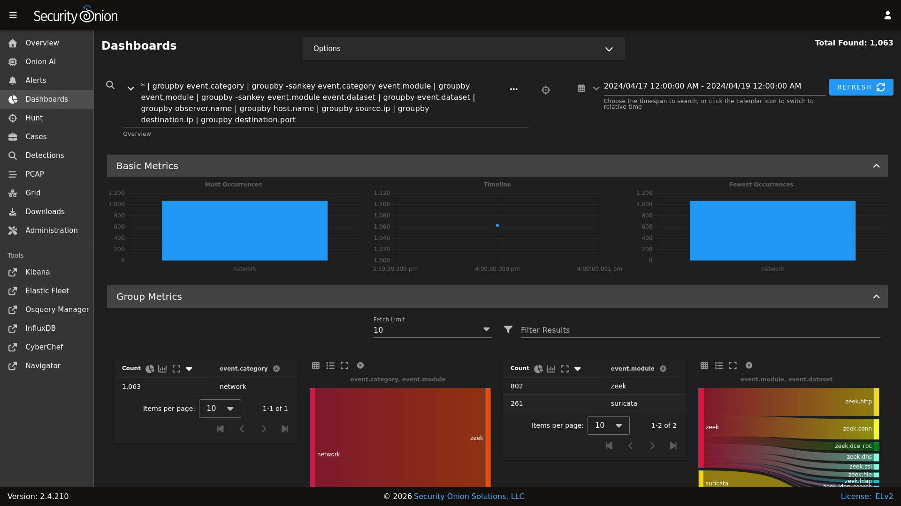
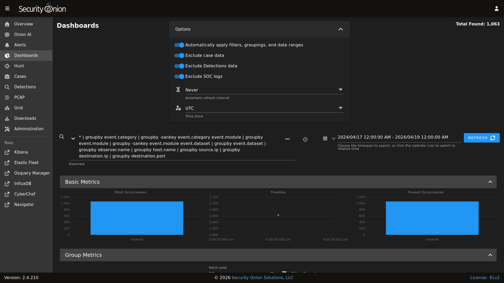

Dashboards
Security Onion Console (SOC) includes a Dashboards interface which includes an entire set of pre-built dashboards for our standard data types.
{kind=link}

Note
Check out our Dashboards video at https://youtu.be/xUBhyF7se8s!
Options
At the top of the page, there is an Options menu that allows you to set options such as Auto Apply, Exclude case data, Exclude Detections data, Exclude SOC Logs, Automatic Refresh Interval, and Time Zone.
{kind=link}

Auto Apply
The Auto Apply option defaults to enabled and will automatically submit your query any time you change filters, groupings, or date ranges.
Exclude case data
Dashboards excludes Cases data by default. If you disable this option, then you can use Dashboards to query your Cases data.
Exclude Detections data
Dashboards excludes Detections data by default. If you disable this option, then you can use Dashboards to query your Detections data.
Exclude SOC Logs
Dashboards also excludes SOC diagnostic logs by default. If you disable this option, then you can use Dashboards to query your SOC diagnostic logs.
Automatic Refresh Interval
The Automatic Refresh Interval setting will automatically refresh your query at the time interval you select.
Time Zone
Dashboards will try to detect your local time zone via your browser. You can manually specify your time zone if necessary.
Query Bar
The easiest way to get started is to click the query drop down box and select one of the pre-defined dashboards. These pre-defined dashboards cover most of the major data types that you would expect to see in a Security Onion deployment: NIDS alerts from Suricata, protocol metadata logs from Zeek or Suricata, Elastic Agent logs, and firewall logs.
On the right side of the query bar are two buttons. The first button is an ellipsis (three dots) which toggles between showing the full query or only the search filter. The second button is a hunt button that will start a new hunt based on the current filters.
Under the query bar, you’ll notice colored bubbles that represent the individual components of the query. If you want to remove part of the query, you can click the X in the corresponding bubble to remove it and run a new search.
If you would like to save your own personal queries, you can bookmark them in your browser. If you would like to customize the default queries for all users, please see the SOC Customization section.
Time Picker
By default, Dashboards searches the last 24 hours. If you want to search a different time frame, you can change it in the upper-right corner of the screen. You can use the default relative time or click the clock icon to change to absolute time.
Basic Metrics
The Basic Metrics section of the page contains a Most Occurrences visualization, a timeline visualization, and a Fewest Occurrences visualization. Bar charts are clickable, so you can click a value to update your search criteria. Aggregation defaults to 10 values, so Most Occurrences is the Top 10 and Fewest Occurrences is the Bottom 10 (long tail). The number of aggregation values is controlled by the Fetch Limit setting in the Group Metrics section.
Group Metrics
The Group Metrics section of the page consists of one or more data tables or visualizations that allow you to stack (aggregate) arbitrary fields.
Group metrics are controlled by the groupby parameter in the search bar. You can read more about the groupby parameter in the OQL section below.
Clicking the table headers allows you to sort ascending or descending. Refreshing the page will retain the sort, but only for the first table.
Clicking a value in the Group Metrics table brings up a context menu of actions for that value. This allows you to refine your existing search, start a new search, or even pivot to external sites like Google and VirusTotal. The default Fetch Limit for the Group Metrics table is 10. If you need to see more than the top 10, you can increase the Fetch Limit and then page through the output using the left and right arrow icons or increase the Rows per page setting.
You can use the buttons in the Count column header to convert the data table to a pie chart or bar chart. If the data table is grouped by more than one field, then you will see an additional button that will convert the data table to a sankey diagram. There is a Maximize View button that will maximize the table to fill the pane (you can press the Esc key to return to normal view). Each of the groupby field headers has a trash button that will remove the field from the table.
Once you have switched to a chart, you will see different buttons at the top of the chart. You can use the Show Table button to return to the data table, the Toggle Legend button to toggle the legend, and the Remove button to remove the chart altogether. There is a Maximize View button that will maximize the chart to fill the pane (you can press the Esc key to return to normal view).
Events
The third and final section of the page is a data table that contains all search results and allows you to drill into individual search results as necessary. Clicking the table header labels allows you to sort ascending or descending. You can also move a column to the right or left, or remove the column, by clicking the appropriate icons surrounding the column header labels. Starting from the left side of each row, there is an arrow which will expand the result to show all of its fields. To the right of that arrow is the Timestamp field. Next, a few standard fields are shown: source.ip, source.port, destination.ip, destination.port, log.id.uid (Zeek unique identifier), network.community_id (Community ID), and event.dataset. Depending on what kind of data you’re looking at, there may be some additional data-specific fields as well.
Clicking a value in the Events table brings up a context menu of actions for that value. This allows you to refine your existing search, start a new search, or even pivot to external sites like Google and VirusTotal.
The default Fetch Limit for the Events table is 100. If you need to see more than 100 events, you can increase the Fetch Limit and then page through the output using the left and right arrow icons or increase the Rows per page setting.
When you click the arrow to expand a row in the Events table, it will show all of the individual fields from that event. Field names are shown on the left and field values on the right. When looking at the field names, there are two icons to the left. The Groupby icon, the left most icon, will add a new groupby table for that field. The Toggle Column icon, to the right of the Groupby icon, will toggle that column in the Events table, and the icon will be a blue color if the column is visible. Additionally, clicking the Toggle Column icon will add a new | table xxx yyy zzz segment to the active query. You can click on values on the right to bring up the context menu to refine your search or pivot to other pages.
Statistics
The bottom left corner of the page shows statistics about the current query including the speed of the backend data fetch and the total round trip time.
OQL
Onion Query Language (OQL) starts with standard Lucene query syntax and then allows you to add optional segments that control what Dashboards does with the results from the query.
sortby
The sortby segment can be added to the end of a hunt query. This can help ensure that you see the most recent data, for example, when sorting by descending timestamp. Otherwise, if the search yields a dataset larger than the X Limit size selected in the UI then you will only get the first X records and then those will be sorted on the web browser.
You can specify one field to sort by or multiple fields separated by spaces. The default order is descending but if you want to force the sort order to be ascending you can add the optional caret (^) symbol to the end of the field name.
| sortby some.field another.field^
groupby
The groupby segment tells Dashboards to group by (aggregate) a particular field. So, for example, if you want to group by destination IP address, you can add the following to your search:
| groupby destination.ip
The groupby segment supports multiple aggregations so you can add more fields that you want to group by, separating those fields with spaces. For example, to group by destination IP address and then destination port in the same data table, you could use:
| groupby destination.ip destination.port
OQL supports multiple groupby segments so if you wanted each of those fields to have their own independent data tables, you could do:
| groupby destination.ip | groupby destination.port
In addition to rendering standard data tables, you can optionally render the data as a pie chart, bar chart, or sankey diagram.
The pie chart is specified using the
-pieoption:
| groupby -pie destination.ip
The bar chart is specified using the
-baroption:
| groupby -bar destination.ip
The sankey diagram is specified using the
-sankeyoption, but keep in mind that this requires at least two fields:
| groupby -sankey destination.ip destination.port
The -maximize option will maximize the table or chart to fill the pane. After viewing the maximized result, you can press the Esc key to return to normal view.
By default, grouping by a particular field won’t show any values if that field is missing. If you would like to include missing values, you can add an asterisk after the field name. For example, suppose you want to look for non-HTTP traffic on port 80 using a query like event.dataset:conn AND destination.port:80 | groupby network.protocol destination.port. If there was non-HTTP traffic on port 80, the network.protocol field may be null and so this query would only return port 80 traffic identified as HTTP. To fix this, add the asterisk after the network.protocol:
event.dataset:conn AND destination.port:80 | groupby network.protocol* destination.port
Please note that adding the asterisk to a non-string field may not work as expected. As an alternative, you may be able to use the asterisk with the equivalent keyword field if it is available. For example, source.geo.ip* may return 0 results, or a query failure error, but source.geo.ip.keyword* may work as expected.
table
The table segment tells Dashboards to include the given field names as columns in the Events table at the bottom of the dashboards screen. The columns will be ordered within the Events table following the same order used in the | table xxx yyy zzz segment. When no table segment is provided in the query, Dashboards will analyze the event.dataset and event.module values of the query results to determine which default columns would be most appropriate to represent those events. Those default columns are defined in the SOC Configuration.
Examples:
event.dataset:conn | table event.module source.ip source.protocol
Or, combined with other segments:
event.dataset:conn | groupby event.module | groupby destination.ip | sortby source.port | table event.module source.ip source.port source.protocol
Note
Only one table segment is currently supported in OQL. If multiple are provided in the query only one will be used, and the unused segments may be automatically removed.
Sankey Diagram Recursion
There’s a known limitation with Sankey diagrams where the diagram is unable to render all data when multiple fields of the diagram contain the same value. This causes a recursion issue. For example, this can occur if using an OQL query of * | groupby -sankey source.ip destination.ip and the included events have a specific IP appearing in both the source.ip and destination.ip fields. SOC will attempt to prevent the recursion issue by omitting any data that introduces recursion. This can result in some diagrams showing partial data on the diagram, and when this occurs the Sankey diagram will have the phrase (partial) appended to the title. In rare scenarios, it’s possible for the diagram to be completely blank, such as if all data results have the same value in each field. Following the example mentioned above, this could happen if the source.ip and destination.ip were always equal.